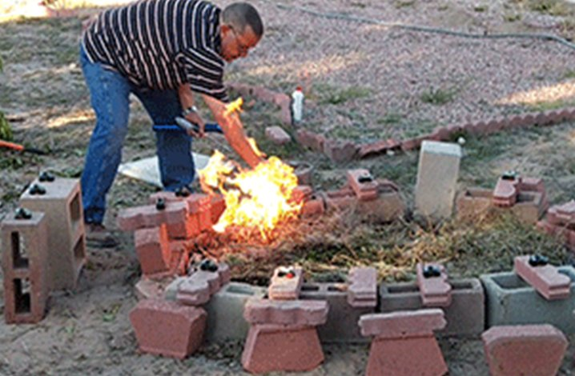
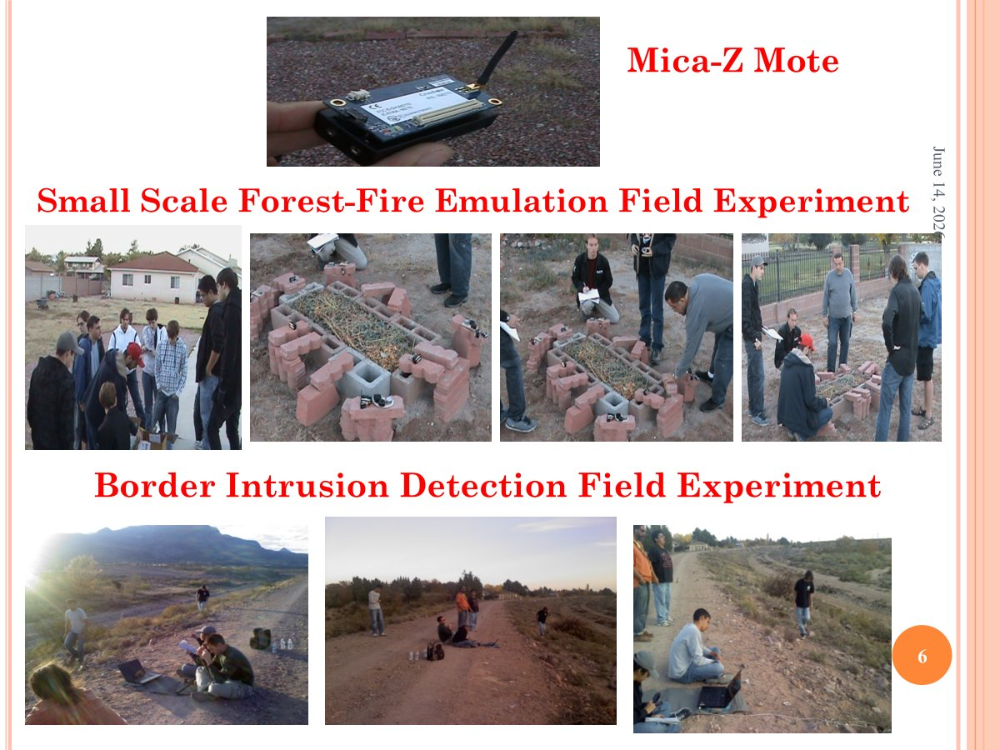

Dr. Hamdy S. Soliman's research is centered on machine learning and neural network modeling, with emphasis on classification, association, and generalization in complex systems. His work spans a wide range of ANN models (LVQ, BP, BAM, Hopfield, ART, KSOFM, Deep Learning) applied to big data analytics, cloud computing management, intelligent sensor networks, and image processing.
His research focuses on smart and secure wireless sensor networks (SS-WSNs) for early detection of critical asynchronous events — forest fires, border intrusion, volcanic eruptions, tsunamis, and disease progression — enabling real-time prediction and intelligent decision-making. Most recent work extends to cancer subtype identification and breast cancer detection using high-dimensional RNA expression data.
He has contributed to network security with novel encryption mechanisms exceeding AES performance (ten machine code instructions per byte, resilient to super-user insider attacks), resulting in five U.S. patents and a peer wireless security protocol comparable to the CCMP US standard.

Small-scale forest-fire emulation test bed — NMT field experiment
NSF-funded ($210,000 MRI grant) laboratory for developing intelligent and secure WSNs to detect asynchronous events — forest fire, volcanic eruption, border intrusion, seismic activity. Supports undergraduate, master's, and doctoral research with interdisciplinary collaborations.
Secures cyber and cellphone communication. Novel encryption algorithm exceeds AES and CCMP government standards. Most recent activity includes cross-Atlantic security communication and secure cellphone apps. Managed and supported by NMT Research Foundation.
Applies LVQ, BP, BAM, Hopfield, ART, KSOFM, and deep learning models to classification, pattern recognition, and analysis across healthcare, security, and environmental monitoring domains.
The Smart & Secure Sensor Lab has conducted multiple outdoor field experiments in New Mexico to validate sensor-based event detection in realistic conditions, using Mica-Z motes in small-scale forest-fire emulation setups and border-intrusion detection trials.

Mica-Z mote, small-scale forest-fire emulation, and border-intrusion detection field trials
Igniting the small-scale forest-fire emulation test bed with sensor mote deployment
| Project | Agency | Amount | Period | Role |
|---|---|---|---|---|
| Experimental Network of Sensors Lab (SS-WSN) | NSF CRI | $210,000 | 2007–2010 | PI |
| Information Assurance Scholarship Program | U.S. DoD | $156,906 | 2002–2003 | Co-PI |
| Image Compression & Network Security | NMT / Presidential | $170,000+ | Ongoing | PI |
| Equipment for Computer Networks Lab | NSF ILI | $48,674 | 1992–1995 | PI |
| Volunteer Cloud Federation (Big Data) | NASA/NMSGC | $25,000 | 2012–2013 | Co-PI |
| BIG DATA + Sensors for Healthcare | NASA/NMSGC | $24,999 | 2014–2016 | PI |
| Task-Grain VHLL for Data-Driven Multiprocessing | Sandia National Labs | $60,000 | 1991–1993 | PI |